-
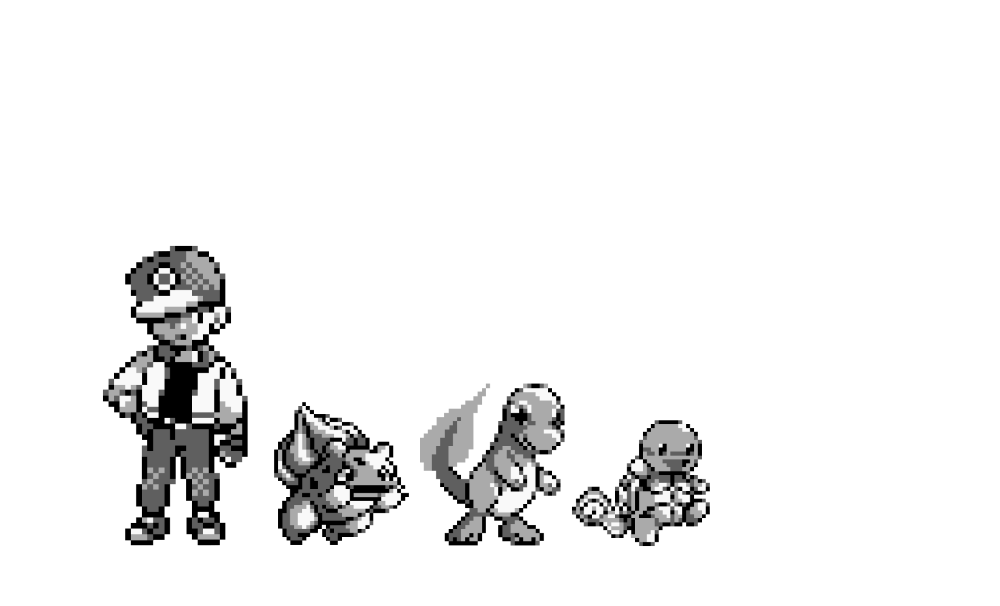
Pokemon Red Green & Blue
Released: Red & Green - February 26, 1996 (JP) Blue - October 15, 1996 (JP) Red & Blue - September 28, 1998 (NA)
Featured 151 PokemonWhen Pokemon Red & Green released it quickly became a success, this success led to GameFreak rereleasing an enhanced version that included bug fixes, updated character models, and a monochrome blue color scheme over the original black and white.These enhanced versions later released around the world allowing everyone to experience what would become one of the most iconic game franchises.
-
Pokemon Yellow
Released: September 12, 1998 (JP)October 19, 1999 (NA)
Pokemon Yellow served as the fully updated release of the original games.This version was inspired by the anime causing it to have some changes to the game. GameFreak not only updated the main character model to resemble Ash Ketchum but also forced the player to take Pikachu as their starter to tie the two together.It's believed that the success of Yellow Version is what led the Pokemon Company to making Pikachu a mascot of the franchise.
-
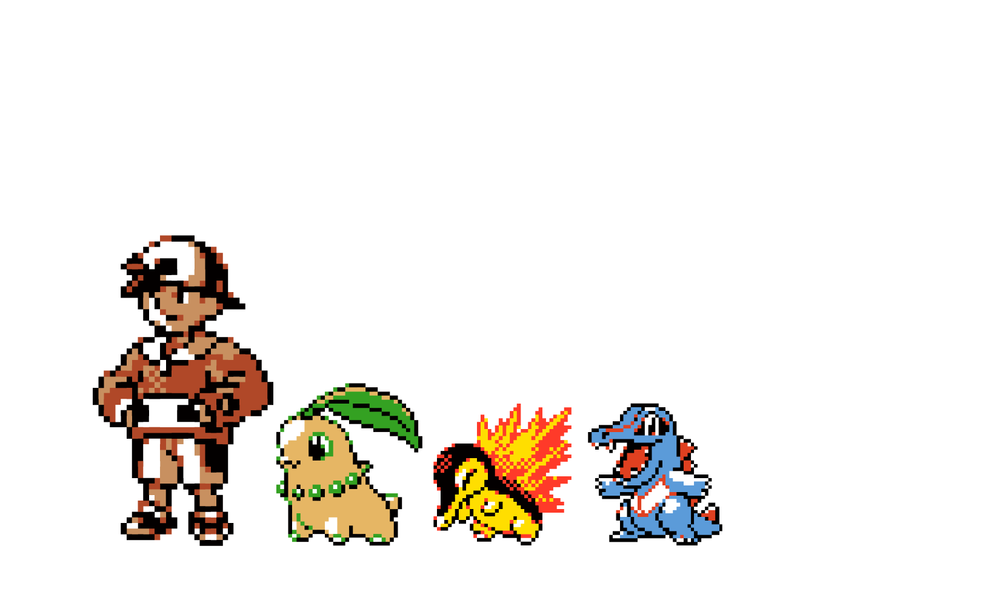
Pokemon Gold & Silver
Released: November 21, 1999 (JP)October 15, 2000 (NA)
Introduced 100 new PokemonThis game served as the first true sequel in the franchise featuring new pokemon, a new map, improvements to the combat system, a day and night cycle that had an effect on in-game events, and full usage of the new GameBoy Colors palette.
-
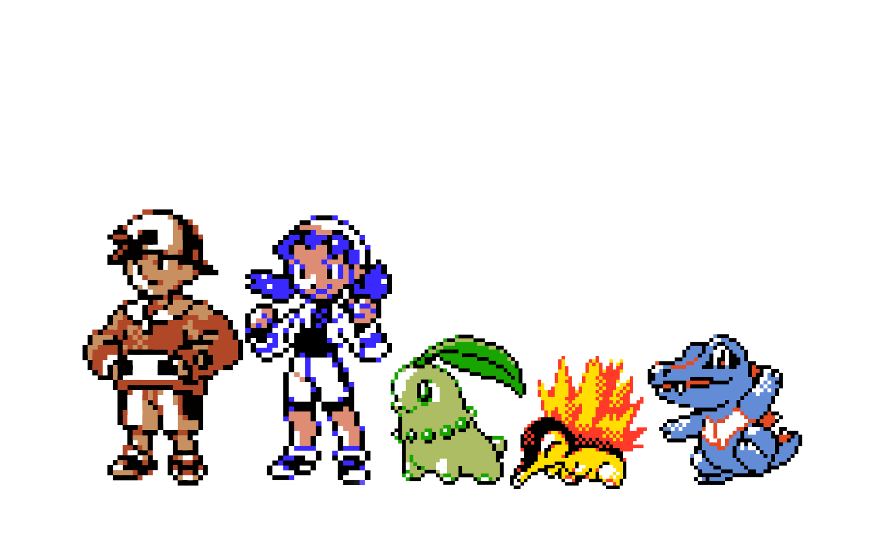
Pokemon Crystal
Released: December 14, 2000 (JP)July 29, 2001 (NA)
Served as a "director's cut" to Gold and Silver that only added a couple new features like both male and female playable characters, combat animations, and 2 new plots after the game is finished.
-
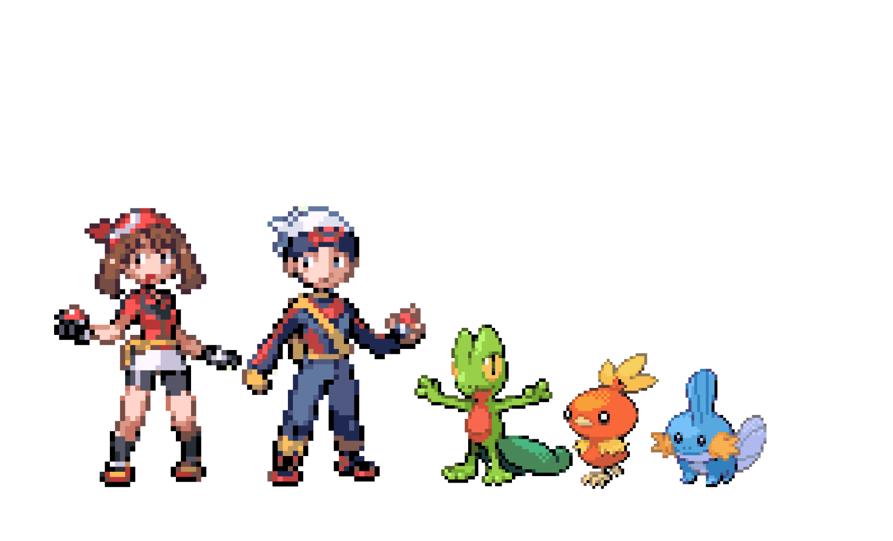
Pokemon Ruby & Sapphire
Released: November 21, 2002 (JP)March 19, 2003 (NA)
Introduced 135 new PokemonWhile the general gameplay remained relatively the same this was the first game to feature special abilities and double battles.First game in the series to release on the GameBoy Advanced allowing it to be the most detailed game to date.
-
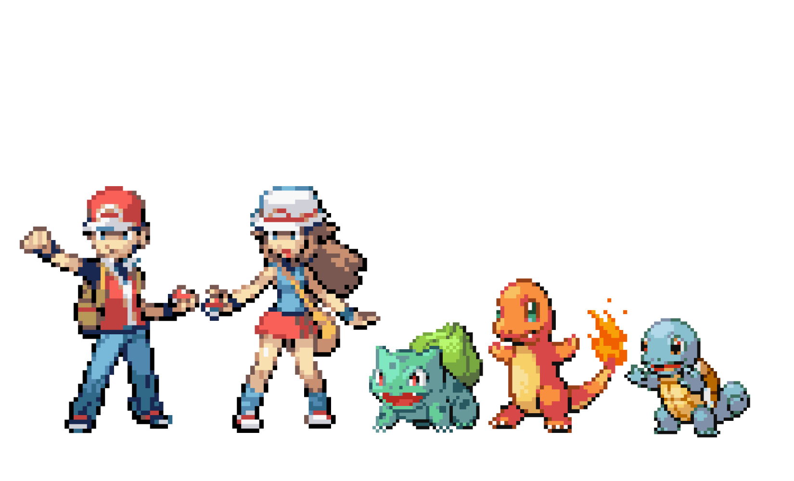
Pokemon FireRed & LeafGreen
Released: January 29, 2004 (JP)September 9, 2004 (NA)
This game was a complete recreation of the original Pokemon Red and Green using the new game engine as well as featuring the newest mechanics and pokemon from the newer generations.
-
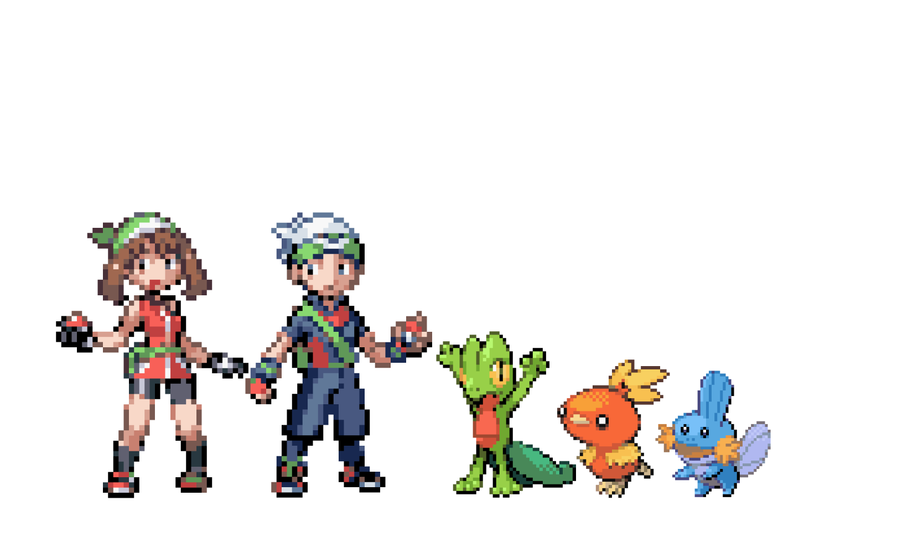
Pokemon Emerald
Released: September 16, 2004 (JP)May 15, 2005 (NA)
Much like Crystal, Emerald acted as a director’s cut to Ruby and Sapphire by being mostly the same game with changes to the story and an added endgame as well as improvements and balances to the gameplay.
-
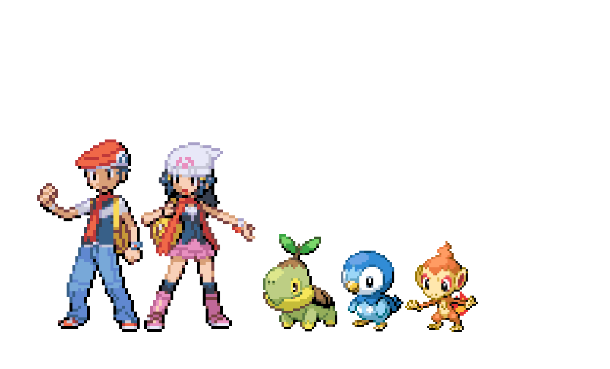
Pokemon Diamond & Pearl
Released: September 28, 2006 (JP)April 22, 2007 (NA)
Introduced 107 new PokemonBeing the first game in the series to release on the DS it was by far the most advanced at this time. This game was the first in the series to use a blend of both 3D and 2D graphics and implemented many new additions such as a reworking to the move-classification system, online multiplayer, and the underground.
-
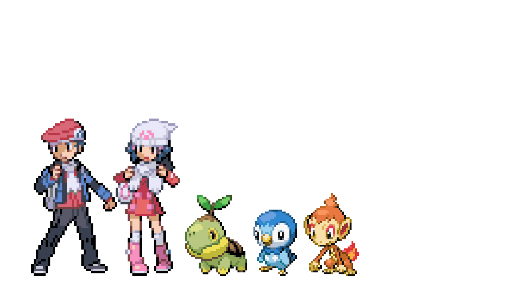
Pokemon Platinum
Released: September 13, 2008 (JP)April 22, 2009 (NA)
This game served as a director’s cut for the Diamond and Pearl games implementing improvements so game mechanics and changes to the storyline and endgame content.
-
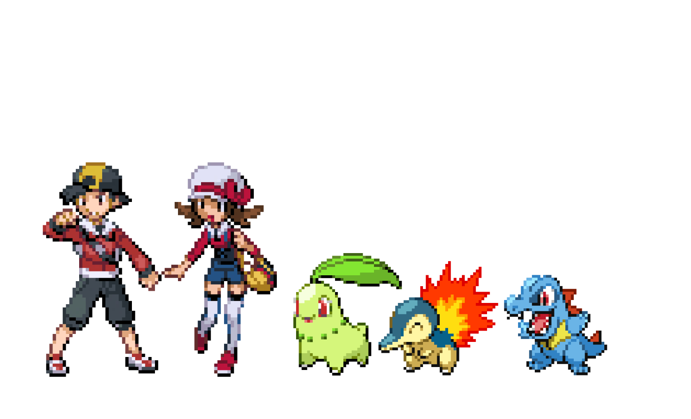
Pokemon HeartGold & SoulSilver
Released: September 12, 2009 (JP)March 14, 2010 (NA)
These games were complete remasterings of the original Gold and Silver games featuring the newest game engine and mechanics as well as the addition of the newer pokemon, new areas on the map to explore and a new Pokewalker device that allowed you to walk your pokemon in the real world to gain experience and items in game.
-

Pokemon Black & White
Released: September 18, 2010 (JP)March 4, 2011 (NA)
Introduced 156 new PokemonThis game served as a breath of fresh air for the franchise and included many new gameplay mechanics like triple battles, rotation battles, seasonal changes based on real world time and other mechanics to increase overall immersion.
-

Pokemon Black 2 & White 2
Released: June 23, 2012 (JP)October 7, 2012 (NA)
Instead of being a third iteration director’s cut like all the generations beforehand this game served as a direct sequel to the story of Black and White. It featured a completely new story set 2 years after the original as well as making improvements on the gameplay and adding new features like the world tournament where you could battle trainers from the previous games.
-

Pokemon X & Y
Released: October 12, 2013 (Worldwide)
Introduced 72 new PokemonAdded many new features including new pokemon typing, the new mega evolution mechanic, trainer customization, as well as 3 new battle modes sky battles, horde encounters and inverse battles.This was the first time the entire game was in full polygonal 3D. This was also the first generation to not get a subsequent 3rd iteration or sequel.
-
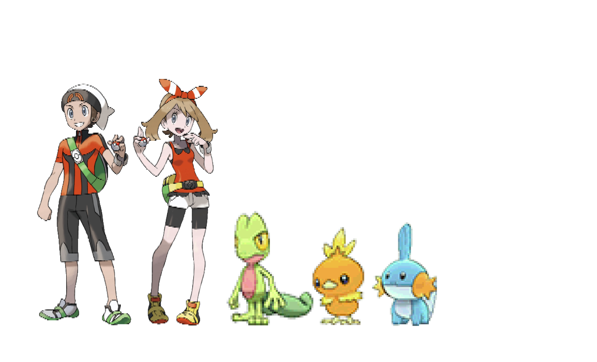
Pokemon Omega Ruby & Alpha Sapphire
Released: November 21, 2014 (Worldwide)
This was a complete remake of the Gen 3 games in the new fully 3D style as well as adding the newest of mechanics from X and Y and the new pokemon that have been added since it’s original release.
-

Pokemon Sun & Moon
Released: November 18, 2016 (Worldwide)
Introduced 88 new Pokemon including new region variants of pre-existing PokemonThey also tried something new by replacing the Gym battles we’ve seen in every game until now with island trials which had trainers completing challenges before battling the leader.
-
Pokemon Ultra Sun & Ultra Moon
Released: November 17, 2017 (Worldwide)
This game served as the director’s cut to sun and moon but featured slightly more changes to the story than we saw in the past as well as new pokemon, new forms, and new gameplay mechanics that weren't seen in the original like the Ultra Beast wormholes.
-
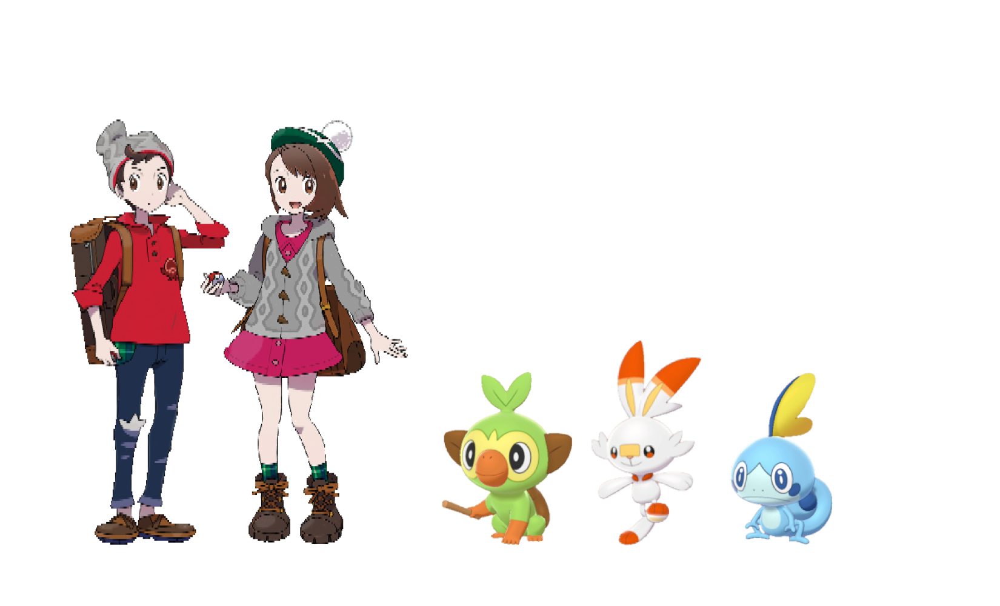
Pokemon Sword & Shield
Released: November 15, 2019 (Worldwide)
Introduced 81 new PokemonAdded many new game features like dynamax battles, gigantamax forms, camping and the first pseudo open-world area in a pokemon game. This generation also brought back gym battles but they implemented the challenge feature before the gym leader from Sun and Moon. It’s also the first time a Pokemon game got downloadable content, expanding the story and adding more new features after launch instead of releasing a third iteration.